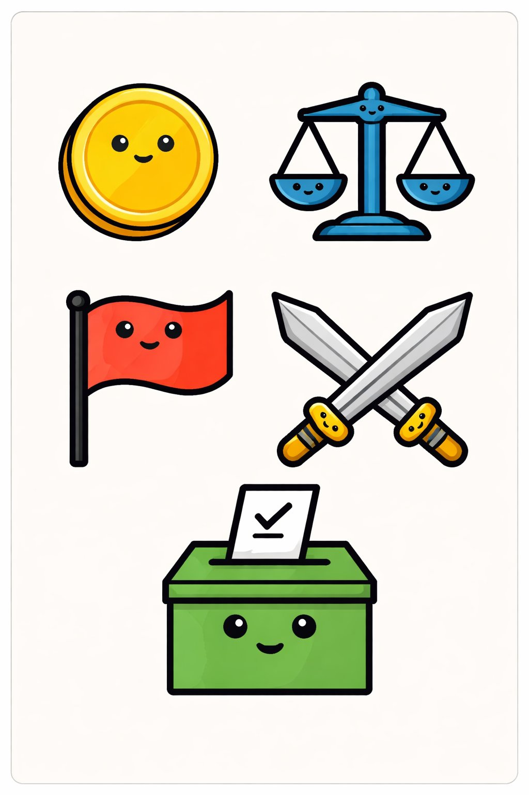
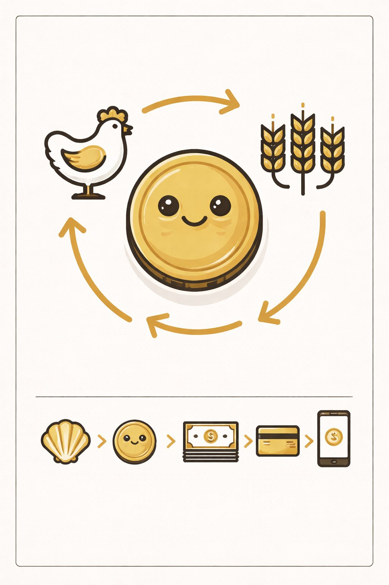
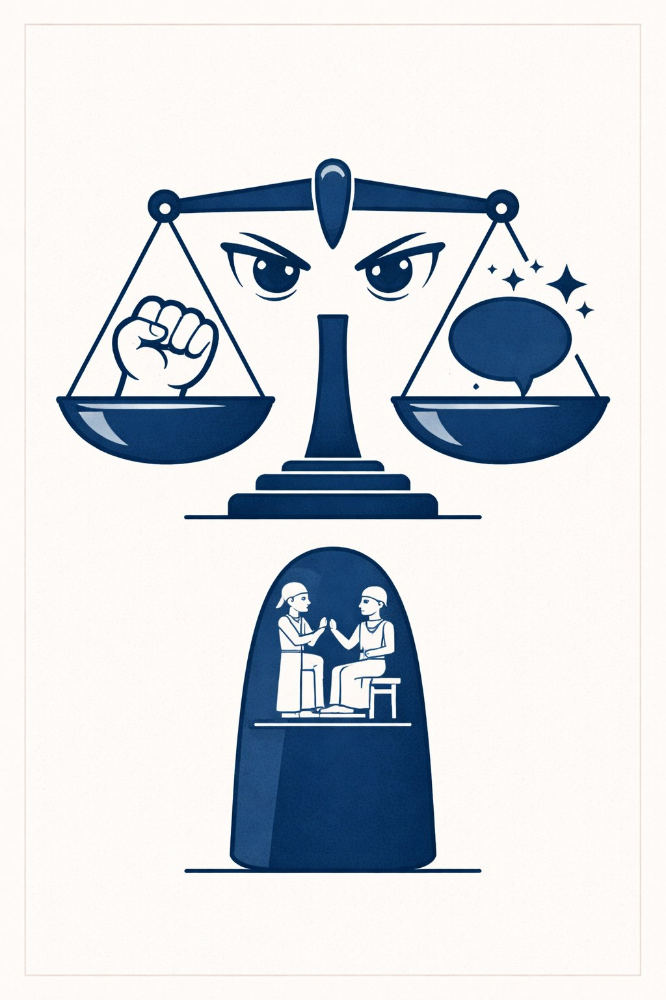
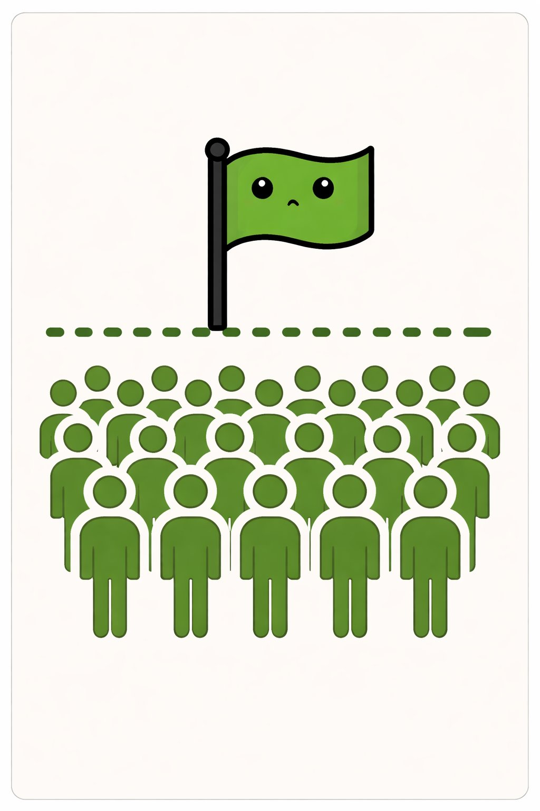
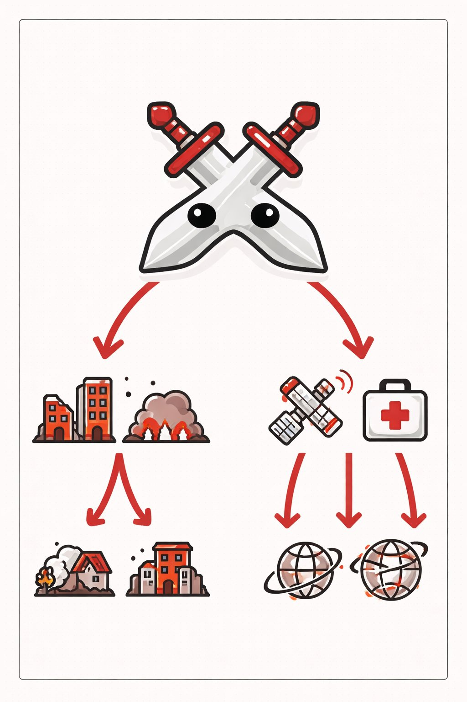
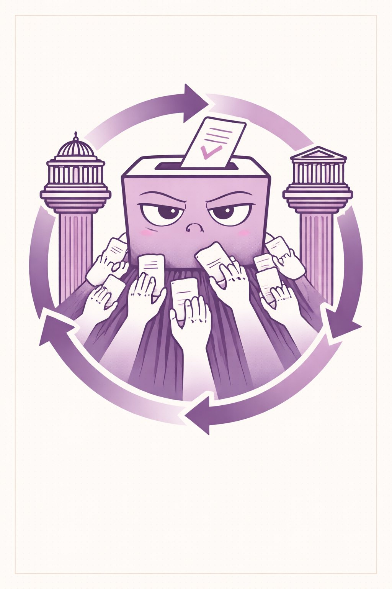

ライオンに ほうりつは ない。アリに おかねは ない。
でも にんげんには ある。
なぜか？ にんげんは おおぜいで くらす いきもの だからだ。
おおぜいが いっしょに いると、かならず もめる。
だから にんげんは「しくみ」を つくった。
めに みえないけど、みんなが したがう やくそく。

オカネちゃんは お金（貨幣）。
もともとは 物々交換の 不便を 解消するための 道具。
「にわとり 3羽 = 小麦 10kg」を いちいち 交渉しなくていい。
おかねが あいだに はいれば、なんでも 交換できる。
でも おかねの 本質は モノ ではなく 信用。
1万円札の 原価は 約20円。みんなが「1万円の 価値がある」と 信じているから 1万円。
集団の 信頼が つくる 幻想。でも その幻想が 世界を まわしている。

ホーリツさんは 法律。
いちばん ふるい 成文法は 約3800年前の ハンムラビ法典。
「目には 目を、歯には 歯を」— これは「復讐は 同等まで」という 制限 のルール。
やられたら 無限に やりかえす のではなく、おなじぶんだけ、と きめた。
暴力に 上限を つけたのが、法律の はじまり。

クニは 国家。歴史家ユヴァル・ハラリが いったように、
国家は 「想像の共同体」。物理的には 存在しない。
国境は 地図に ひいた 線。パスポートは ただの 紙。
でも みんなが「この線の こちらが わが国」と 信じるから、国は 機能する。
国は 協力の 仕組み。何百万人が ひとつの ルールのもとで くらせる。
でも 同時に「あいつらは ちがう」という 分断も つくる。

センソウは 戦争。にんげんの 歴史で いちばん おおきな きず。
記録に のこる 5000年間で、完全に 平和だった 年は 約300年 しかない。
でも 戦争から うまれたものも ある。
インターネット（ネット先輩）は 軍事技術。缶詰は ナポレオンの 遠征のため。
レーダー、ジェット機、GPS。
人類の 発明の おおくが、戦争から うまれたという 皮肉。

ミンシュ先輩は 民主主義。
古代アテネで うまれ、何度も ころされ、何度も よみがえった。
核心は「権力を にぎるのは 国民」という アイデア。
民主主義は おそい。めんどくさい。衆愚政治に おちいることもある。
でも 独裁者が まちがえたとき、民主主義には やりなおす しくみ がある。
選挙、言論の自由、三権分立。
まちがえることを おりこみずみの しくみ。それが 民主主義の つよさ。
オカネちゃんに おそわったこと — 「しんじるから、かちが ある」。
ホーリツさんに おそわったこと — 「ことばで もめるのは、こぶしより すすんでいる」。
クニに おそわったこと — 「みんなが しんじると、みえないものも ほんものに なる」。
センソウに おそわったこと — 「にんげんの なかの かげを、みつめること」。
ミンシュ先輩に おそわったこと — 「かんぺきじゃなくていい。やりなおせれば」。
① 信頼 — お金も国も法律も、みんなが信じるから動く。信頼は社会の酸素。
② 不完全 — どの仕組みも完璧じゃない。でも「直せる」仕組みが一番つよい。
③ 責任 — しくみは道具。つかうのはにんげん。
めに みえないけど、
そこに ある。
にんげんが つくった、にんげんの ための やくそく。